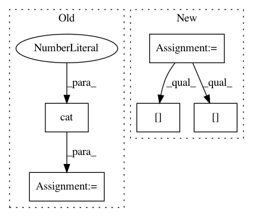

47fa9165313efd36310de98fec8b25be08016db2,face_alignment/api.py,FaceAlignment,get_landmarks_from_batch,#FaceAlignment#,189
Before Change
inp.div_(255.0).unsqueeze_(0)
inp_batch.append(inp)
inp_batch = torch.cat(inp_batch, dim=0)
out = self.face_alignment_net(inp_batch)[-1].detach()
if self.flip_input:
After Change
// A batch for each frame
for i, faces in enumerate(detected_faces):
landmark_set = []
for face in faces:
center = torch.FloatTensor(
[(face[2] + face[0]) / 2.0,
(face[3] + face[1]) / 2.0])
center[1] = center[1] - (face[3] - face[1]) * 0.12
scale = (face[2] - face[0] + face[3] - face[1]) / self.face_detector.reference_scale
image = image_batch[i].cpu().numpy()
image = image.transpose(1, 2, 0)
inp = crop(image, center, scale)
inp = torch.from_numpy(inp.transpose((2, 0, 1))).float()
inp = inp.to(self.device)
inp.div_(255.0).unsqueeze_(0)
out = self.face_alignment_net(inp)[-1].detach()
if self.flip_input:
out += flip(self.face_alignment_net(flip(inp_batch))
[-1].detach(), is_label=True)
out = out.cpu()
pts, pts_img = get_preds_fromhm(out, center, scale)
pts, pts_img = pts.view(-1, 68, 2) * 4, pts_img.view(-1, 68, 2)
// TODO: Adding 3D landmark support
if self.landmarks_type == LandmarksType._3D:
heatmaps = np.zeros((68, 256, 256), dtype=np.float32)
for i in range(68):
if pts[i, 0] > 0:
heatmaps[i] = draw_gaussian(
heatmaps[i], pts[i], 2)
heatmaps = torch.from_numpy(
heatmaps).unsqueeze_(0)
heatmaps = heatmaps.to(self.device)
depth_pred = self.depth_prediciton_net(
torch.cat((inp, heatmaps), 1)).data.cpu().view(68, 1)
pts_img = torch.cat(
(pts_img, depth_pred * (1.0 / (256.0 / (200.0 * scale)))), 1)
landmark_set.append(pts_img.numpy())
landmark_set = np.concatenate(landmark_set, axis=0)
landmarks.append(landmark_set)
return landmarks
In pattern: SUPERPATTERN
Frequency: 3
Non-data size: 5
Instances
Project Name: 1adrianb/face-alignment
Commit Name: 47fa9165313efd36310de98fec8b25be08016db2
Time: 2020-07-20
Author: imad.toubal@gmail.com
File Name: face_alignment/api.py
Class Name: FaceAlignment
Method Name: get_landmarks_from_batch
Project Name: SenticNet/conv-emotion
Commit Name: 87d57a3d34a1eef2c6ad5519741710e3321f136c
Time: 2019-03-19
Author: 40890991+soujanyaporia@users.noreply.github.com
File Name: DialogueRNN/model.py
Class Name: BiE2EModel
Method Name: forward
Project Name: eriklindernoren/PyTorch-YOLOv3
Commit Name: 012daf57ac31d82366323e7ec27ab7c2cb678a09
Time: 2018-05-27
Author: eriklindernoren@gmail.com
File Name: utils.py
Class Name:
Method Name: non_max_suppression